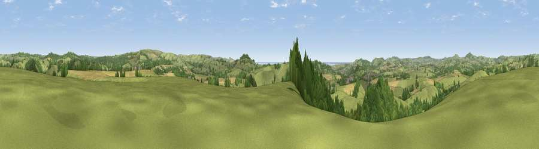

Viewpoint near West Milton
#9114 in England · top 21% of its area beats it · near West MiltonWhere it is
The exact computed spot (SY 49825 95375). Click the marker for map links.
The view, rendered

A 360° render of this exact spot computed from the terrain model, tree cover and land cover — summer colours, afternoon light, calibrated against photographs of famous viewpoints. Real trees, hedges and buildings will differ in detail.
The panorama
Grey silhouette: terrain skyline in each direction (720 bearings, Earth curvature and refraction included). Dashed green: skyline with trees (+15 m) and buildings (+8 m) as obstacles. Blue strip: how far the ground is visible on each bearing.
Where the view opens
Wedge length = distance to the farthest visible ground on that bearing (vegetation-aware). Rings at 10, 25 and 50 km.
What fills the view
63% grassland · 26% woodland · 9% cropland ·
Angular shares of the visible panorama (visual magnitude), not map area. Landscape diversity 0.41 (0–1 Shannon).
Key numbers
More beautiful places nearby
The staircase of upgrades: each row has a higher view potential than everything closer. Driving times are estimates from straight-line distance, calibrated against real road routing — check an actual route before setting out.
| Place | Direction | Drive | Score |
|---|---|---|---|
| Viewpoint near Walditch | SSW · 4 km | ~9 min | 72.3 |
| Viewpoint near Nettlecombe | E · 4 km | ~9 min | 79.3 |
| Viewpoint near Askerswell | E · 4 km | ~10 min | 81.7 |
| Viewpoint near Symondsbury | WSW · 7 km | ~14 min | 81.8 |
| Beacon Knap | SSE · 7 km | ~15 min | 84.8 |
| The Knoll | SSE · 8 km | ~17 min | 91.0 |
50.75579, -2.71267 · source: screening · position refined by local search. Computed location — check access rights before visiting.